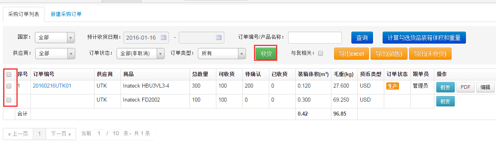
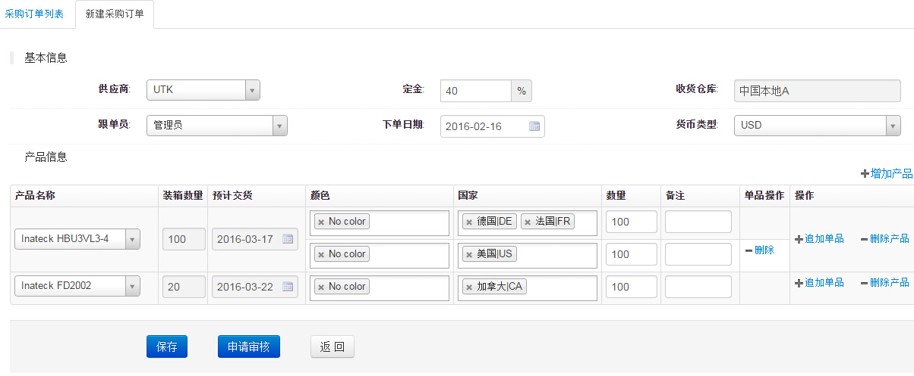
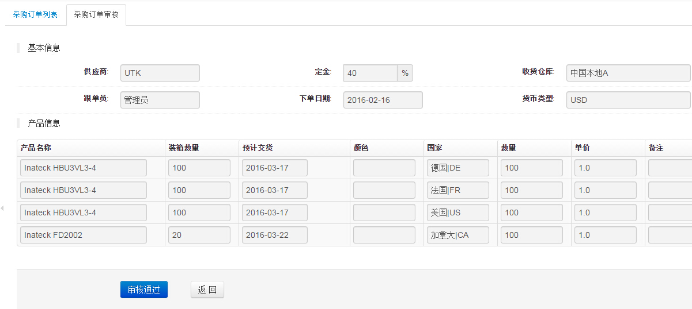
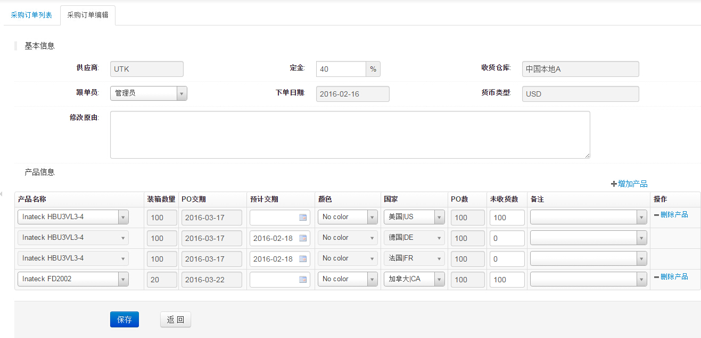
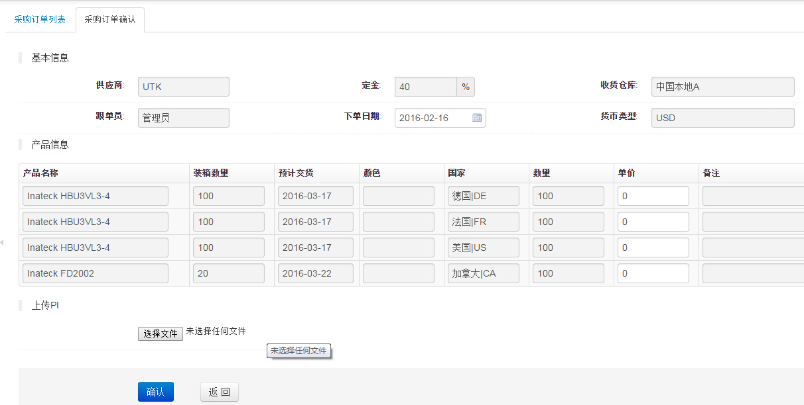

采购订单管理
1、采购订单列表页面,如下图

- 如图该页面可以对采购订单进行新建、审核、确认、取消、建立配件单及新建收货单等的操作
- 如果一个订单里有多个产品会显示在多行里，点击“概要”后会显示该产品所有平台及数量
- 选中序号前的选择框，点击“计算勾选货品装箱体积和重量“按钮，可以对选中产品进行重量体积试算
- 只要该订单相关的定金或尾款已申请付款即不能编辑
- 只要该订单没付款，可对未收货的产品数量进行修改
- 选中要收货的订单，点击收货进入"收货提单新建"页面
2、采购订单新建页面,如下图

- 如上图，同一个产品一行内可以选择多个颜色和国家及数量，如果该产品颜色和数量及价格不同，可以点击“追加单品”这时产品名称和装箱数和预计交货时间会合并单元格，拆分成一个产品两行数据，如果一个产品在多行里有相同颜色和国家的产品，该产品数量累加
- 产品信息项里的数量必须为装箱数的整数倍
- 订单编辑的时候会还原为：产品+国家+颜色为一行数据
- 新建后会给产品经理发送邮件，如果点击的是“保存审核”按钮也会给审核人(如果采购量和现有库存的和超过5个月的销量就会提示超标，审核人为供应链和销售主管)发送审核邮件
- 订单审核后会给新建人和供应商发送邮件
3、采购订单审核页面,如下图

- 上图是普通审核页面，如果订单超标会让填写审核通过原因
- 订单审核后会给供应商和供应链相关人员发送邮件
4、采购订单编辑页面,如下图

- 该页面显示的是订单为生产状态但未付款部分收货的情况(草稿状态可以随意编辑产品数量，生产状态后编辑每版都有快照可查历史修改记录)
- 未付款前可以对未收货的订单进行数量编辑
- 产品信息项里的数量必须为装箱数的整数倍
5、采购订单确认页面,如下图

- 如上图，该功能可以对产品的价格进行编辑，系统会根据产品录入的价格进行自动填充，订单确认人可以与订单PI价格比较后，进行再次编辑价格
- 确认后订单进入"生产"状态